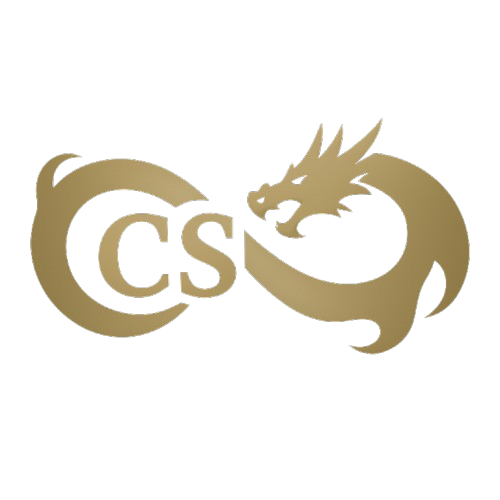

Bienvenue sur mon portfolio !

Salut, moi c'est Ceyhun SAPMAZ
Je suis actuellement étudiant en deuxième année de BTS SIO option SLAM à Colmar. Prochainement étudiant en Bachelor concepteur développeur d’application au CCI Campus à Strasbourg, je suis à la recherche d’une entreprise qui pourrait m’accueillir en alternance pour continuer mes études afin de devenir Développeur Full Stack, je vous propose sur ce portfolio de retrouver ci-dessous les différentes études, et projet professionnel que j'ai pu entreprendre au sein de ma carrière.
Vous retrouverez ci-dessous mon CV
Toutes ces connaissances ont été acquises de différentes façons. Elles ont été acquises durant mes études en BTS SIO et d'autres par ma propre initiative en essayant de mettre en place des solutions. J’ai également relevé les défis organisés, ce qui permet d’effectuer des recherches et aller encore plus loin.
Toutes ces connaissances ont été acquises de différentes façons. Elles ont été acquises durant mes études en BTS SIO et d'autres par ma propre initiative en essayant de mettre en place des solutions. J’ai également relevé les défis organisés, ce qui permet d’effectuer des recherches et aller encore plus loin.
CCI Campus / Strasbourg
Concepteur Développeur d’Applications
Lycée Camille Sée / Colmar
Solutions Logicielles et Applications Métiers
Lycée Jean Rostand / Strasbourg
Spécialité Maths et Physique-chimie
En Cours...
En Cours...
📍 Localisation: Strasbourg, France
📧 Email: ceyhuns2004@gmail.com
📞 Téléphone: 07 69 06 09 00